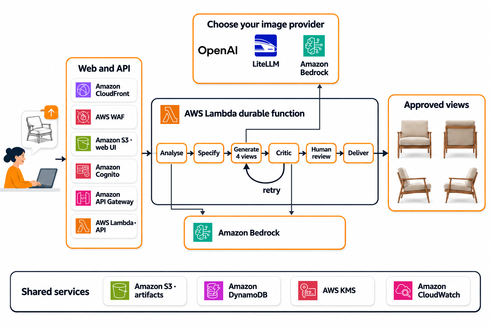

Sketch to product views on AWS
Turn a product design sketch into four photoreal studio views (front, back and both sides), with an AI critic that checks each view and retries the ones that fail, and a human approval step before delivery.

What happens in the demo
- Upload a sketch and set the run: image model, size, quality, attempts.
- The analyser reads the image: what the object is, its parts and the views drawn.
- Four views are generated: the front, then the back, then both sides.
- The critic compares each view with the sketch and retries the ones that fail.
- You review and approve, or ask for changes.
- The approved views are delivered.
At each step the video names the AWS service doing the work, including Amazon Cognito, Amazon CloudFront, AWS WAF, Amazon API Gateway, AWS Lambda durable functions, Amazon Bedrock, Amazon S3 and Amazon DynamoDB.